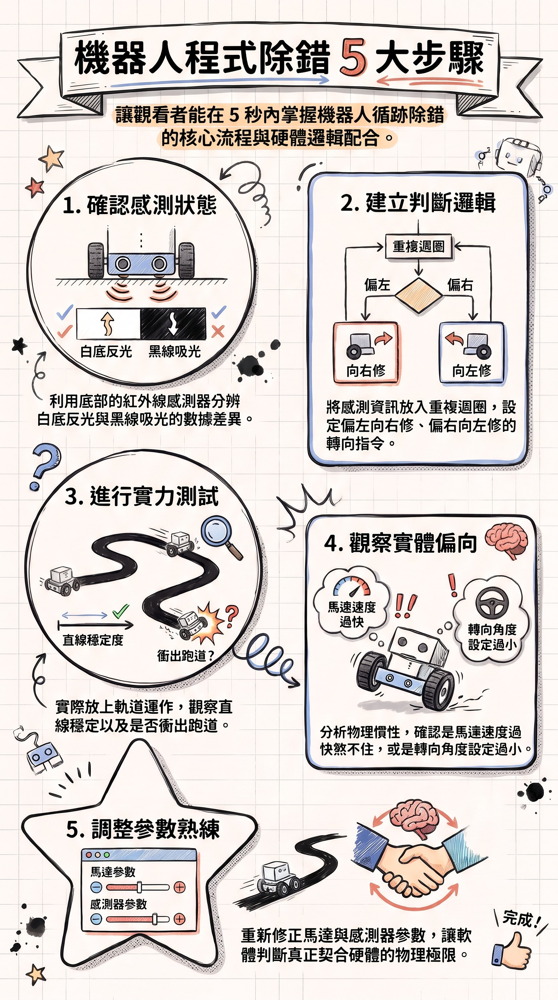
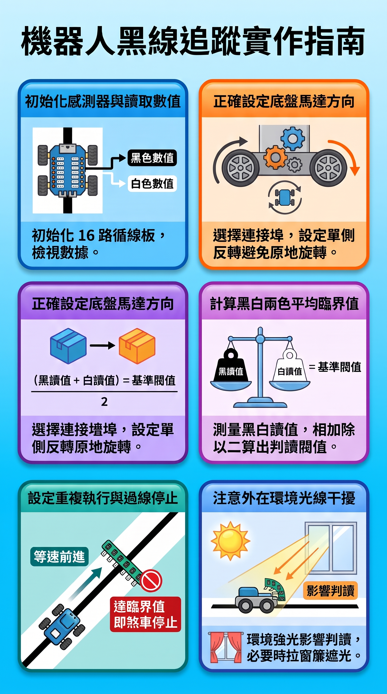
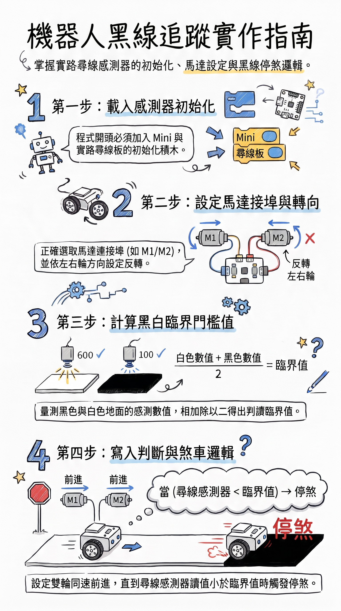
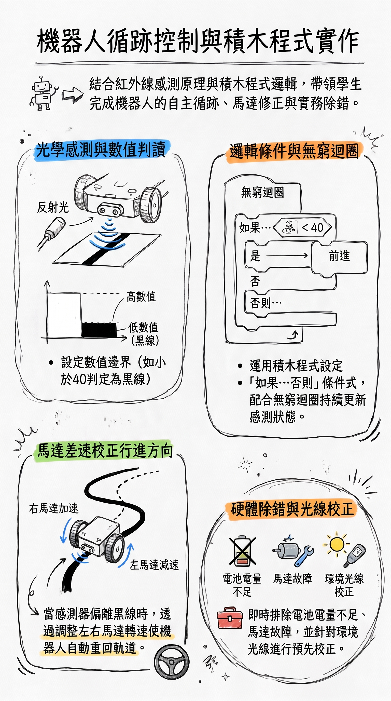
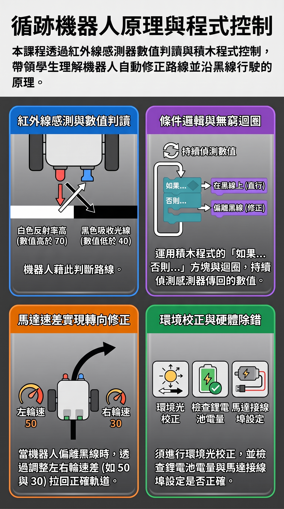

循跡達人
Matrix 機器人 十線循跡感測器程式設計實戰
南投縣政府「115學年度科技教育推動總體計畫—子計畫二—支持偏遠地區學校推動科技領域課程」到校服務暨公開觀議課活動。本專區整合全套公開授課訪視指南圖解、說課/觀課/議課 6 大專題 PPTX 簡報、教案網頁簡報與4 師觀課紀錄統整儀表板。
1. 教案網頁式簡報與視覺化模擬
整合 108 課綱素養、三維教學目標、45 分鐘課堂時間軸。核心內建「十通道循跡動態演算模擬器」，支援即時滑桿拖曳與左右馬達差速演算。
2. 觀議課統整分析與視覺化儀表板
將林大鈞、莊嘉平/莊嘉年、姚述勤、黃俊峯等訪視專家手寫紀錄逐字電子化。具備專業發展規準六大向度 SVG 雷達圖，提煉拉窗簾防光害等課堂教學機智。
公開課訪視全流程整合專區
融合「1151109鳳鳴公開課訪視」公文、六大專業圖鑑海報、6 大專題簡報與 Padlet 歷程資源。
南投縣政府辦理「115學年度科技教育推動總體計畫—子計畫二—支持偏遠地區學校推動科技領域課程」到校服務暨公開觀議課活動
• 時間：115 年 11 月 9 日 (星期一)
• 08:30～08:55 說課 ｜ 09:05～09:50 觀課 ｜ 10:00～10:45 議課
• 地點：鳳鳴國中多功能教室、資訊教室
• 授課教師：吳昌年 老師（七年級資訊科技）
📊 訪視核心：說課、觀課、議課 六大圖解專業指南
點擊任意圖鑑即可開啟高解析度放大檢視與下載。

機器人程式除錯 5 大步驟
1.確認感測狀態 2.建立判斷邏輯 3.進行實力測試 4.觀察實體偏向 5.調整參數熟練。
科技教育扎實落地 實作關鍵
教學正常化與扎實備課、引進外部鴻海基金會資源培訓、設備耗材維護優化、除錯五步迴圈。

機器人黑線追蹤實作指南
感測器初始化、底盤馬達方向設定、黑白平均臨界值、重複執行過線停止、外在光線拉窗簾遮光。

機器人黑線追蹤大解密
第一步初始化、第二步設定接埠與轉向反轉、第三步計算臨界門檻值、第四步寫入煞車判斷。

循跡控制與積木程式實作
光學判讀數值邊界、無窮迴圈條件式、左右馬達差速校正行進方向、電池與環境光線除錯。

循跡機器人原理與程式控制
白高黑低光學數值、持續偵測迴圈、左右輪速差（50與30）拉回軌道、環境光校正。